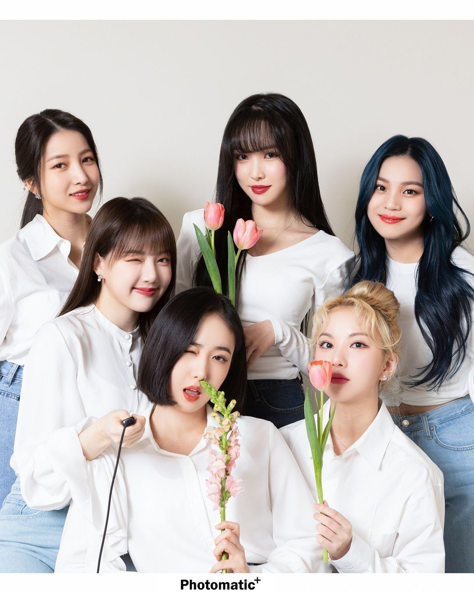
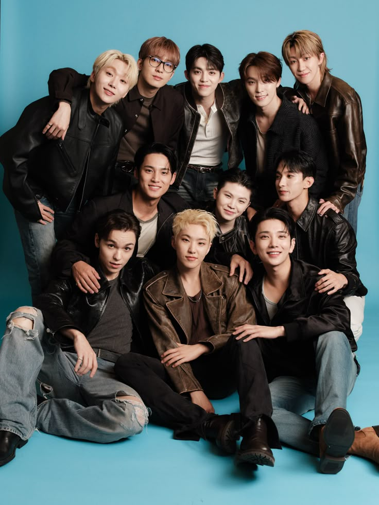

Entertainment
Sharing my favorite movie,drama and artist that bring joy to my life!
My Favorite Korean Group
My favorite korean girl group is Gfriend. Unfortunately, the group is already disband due to confidentiap reasons. However, until now I still listening and watching their music video, dance practice, live performances to make me feel better. GFriend are consists of 6 members, Sowon(Leader and Sub-Vocals), Eunha (Lead Vocalist), Yuju (Main Vocalist), SinB (Main Dancer), Yerin (Sub-Vocals) and Umji (Sub-Vocals). My bias in this group are Yuju.
Their synchronization and beautiful melodies always comfort me whenever I listen to them. My favorites are
Rough
and
Time for the Moon Night.

GFriend; my favorite korean girl group

Seventeen; my favorite korean boy group
My favorite korean boy group is Seventeen. I started interest in them in 2017. Their first song that I listen to was "Don't Wanna Cry". From that, I keep on listening to all of their music. This group consists of 13 members. My bias was Hoshi.
To me, Seventeen is like another version of GFriend. Their synchronization and beautiful melodies are always playing in my head. My top 2 favorite of Seventeen songs are
Call Call Call
and
Don't Wanna Cry.
My Favorite Song All the Time
Presenting to you; Reckless by Madison Beer:
My Favorite Movie and Drama
My favourite genre is thriller,crime and horror. Usually, I would prefer to watch Korean movie and drama, however sometimes I do enjoy watching Chinese, Taiwanese, Japanese and American movie/drama.
These are my top 6 favorite movie and drama list.
| Movie/Drama Names |
Language/Country Origin |
Genre |
Total Episode |
| Partners for Justice |
Korean,South Korea |
Crime, Mystery, Thriller and Medical Procedural |
Seasons 1 (16 Episode)
Seasons 2 (16 Episode) |
| The First Responders |
Korean,South Korea |
Crime, Thriller and Mystery |
Seasons 1 (12 Episode)
Seasons 2 (12 Episode) |
| Revenant |
Korean,South Korea |
Mystery, Thriller and Horror |
12 Episode |
| Save Me |
Korean,South Korea |
Mystery and Thriller |
16 Episode |
| Till We Meet Again |
Mandarin, Taiwan |
Romantic Fantasy, Comedy, Mystery and Drama |
Movie |
| The Hunt |
Chinese, China |
Suspend,Mystery, Drama and Crime-Thriller |
16 Episode |
Best viewed in Chrome, 1920x1080 resolution. Last updated: May 2026.